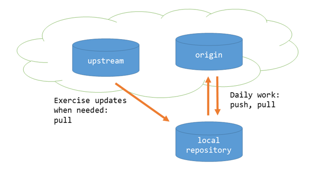

Johdanto versionhallintaan
Mitä on versionhallinta
Versionhallinnan tarkoituksena on tallettaa lähdekoodin versioiden muutoksia siten, että
- Saman ohjelmiston eri versioille voidaan antaa tunnisteet muuttamatta ohjelmakoodin sisältöä (esim. tiedostonimiä)
- Aikaisemmat versiot voidaan tarvittaessa palauttaa
- Ohjelmistosta voidaan kehittää useita eri versioita yhtaikaa hallitusti.
- Ohjelmistoon tehtyjä muutoksia voidaan seurata, dokumentoida ja hallita.
Versionhallinta helpottaa ja tehostaa yksittäisen kehittäjän työtä. Ennen kaikkea se kuitenkin mahdollistaa ohjelmistojen tehokkaan kehittämisen ohjelmistotiimeissä.
Versionhallinnan käyttö on yksi ohjelmistoalan ammattilaisen perustaitoja.
Mikä on Git
Versionhallintajärjestelmiä on useita erilaisia. Käytännössä niistä Git on muodostunut versionhallinnan de-facto standardiksi.
Syynä Git:n suosioon lienee, että se on
- Avointa lähdekoodia. Git on lisensoitu avoimen lähdekoodin GPLv2-lisenssillä.
- Ilmainen.
- Hajautettu. Siinä ei ole minkäänlaista keskitettyä palvelinta.
- Saatavilla kaikkiin ympäristöihin.
Git-repositoriot
Git tallettaa kaiken informaation paikallisesti omaan tietovarastoonsa, jota kutsutaan nimellä repositorio.
Lähes kaikki toiminnot voidaan tehdä paikallisesti. Voit siis kehittää ja tallettaa ohjelmiston versioita ilman verkkoyhteyttä.
Repositorio sijaitsee paikallisella koneella siinä hakemistossa, jossa ohjelmistoa kehitetään.
Repositorioiden hajautus ja synkronointi
Itsenäisten repositoryjen sisältöjä voidaan synkronoida keskenään. Tähän tietysti tarvitaan verkkoyhteys.

Repositorioiden sisältöjen synkronointi mahdollistaa niiden sisältöjen jakamisen useiden kehittäjien kesken. Tyypillinen malli on, että kehittäjät synkronoivat oman työnsä verkkopalvelussa sijaitsevaan repositorioon, ja saavat muiden kehittäjien tekemän työn sen kautta synkronoitua itselleen.
Git:n käyttöönotto
Komentorivi
Git:lle on useita graafisia käyttöliittymiä, myös Windows-asennuspaketissa on yksi sellainen. Tällä kurssilla käytämme kuitenkin komentorivikomentoja. Niin tekevät useimmat ammattilaisetkin.
Windows-käyttöjärjestelmällä on kaksi komentotulkkia, cmd ja powershell. Git:n Windows-asennus sisältää Git Bash –komentotulkin, joka emuloi iOS- ja Linux-järjestelmiin esiasennettua bash-komentotulkkia
Git-komennot ovat kaikissa komentotulkeissa samat. Hakemistojen ja tiedostojen käsittelykomennot voivat eri komentotulkeissa poiketa toisistaan.
Jos komentotulkin käyttäminen ei ole entuudestaan tuttua, voit perehtyä siihen esim. oheisen materiaalin avulla:
Huomautus
Tässä materiaalissa käytetään mahdollisissa tiedostojärjestelmäkomennoissa bash-komentoja.
Konfigurointi
Asennuksen jälkeen on tarpeen tehdä joitakin konfigurointeja, ennen kuin git-käyttö voidaan aloittaa.
Käyttäjän tiedot
Jokaiseen talletettuun muutokseen tallentuu käyttäjän nimi ja sähköpostiosoite Käyttäjätiedot tarvitsee asettaa tietokoneelle vain kerran, ja niitä voi tarvittaessa myöhemmin muuttaa
git config set –-global user.name ”Markku Ruonavaara”
git config set –-global user.email markku.ruonavaara@haaga-helia.fi
Konfigurointitietoja tallennetaan järjestelmä-, käyttäjä- ja projektikohtaisesti. Valitsin -–global viittaa siihen, että asetus on järjestelmä- ja käyttäjäkohtainen: se on voimassa tällä tietokoneella (järjestelmä) tämän käyttäjän kaikille repositorioille.
Jos mitään valitsinta ei määritetä, asetuksesta tulee projektikohtainen. Se tarkoittaa, että asetus on voimassa vain siinä repositoriossa, jossa se tehtiin.
Editori
Joidenkin toimintojen yhteydessä Git käynnistää editorin tekstin kirjoittamista varten. Oletusarvoisesti se on systeemin oletuseditori, joka yleensä on vim.
Voit halutessasi asettaa editorin, jonka Git käynnistää. Seuraava komento asettaa editoriksi Visual Studio Code:n.
Konfiguroinnissa määritetään käynnistyskomento, joten jos editoria ei löydy polusta, voit joutua antamaan koko polun.
Jos kuitenkin joskus päädyt vim-editoriin, oheisesta ohjeesta voi olla sinulle hyötyä:
GitHub-palvelun dokumentaation ohjeita editorien konfiguroinnista:
Konfiguraatioasetusten tarkastelu
Kaikki asetukset voit tarkistaa näin:
Yhden parametrin arvon voit tarkistaa antamalla config komennon parametriksi parametrin nimen:
Git-komennoista yleisesti
Kaikki Git-komennot alkavat git, sen jälkeen tulee varsinainen komento (esim. config). Komennoilla voi olla parametreja. Tässä esimerkissä komennolle config annetaan parametriksi halutun konfiguraatioparametrin nimi core.editor
Huomautus
Tässä materiaalissa Git-komentoihin viitataan tekstissä vain komento-osalla, esim. config. Komentorivillä annettava komento on tällöin git config.
Komennoilla voi olla alikomentoja ja niille voidaan antaa valitsimia (option), jotka täsmentävät, mitä halutaan tehdä.
Tässä esimerkissä list on config-komennon alikomento, ja valitsin --global määrittää, että halutaan listata vain globaalit, kaikkiin repositorioihisi vaikuttavat parametrit.
git status --short valitsin --short voidaan myös antaa lyhyemmässä muodossa -s.
Kaikille komennoille saa lyhyen opastustekstin valitsimella -h
$ git config -h
usage: git config list [<file-option>] [<display-option>] [--includes]
or: git config get [<file-option>] [<display-option>] [--includes] [--all] [--regexp] [--value=<pattern>] [--fixed-value] [--default=<default>] [--url=<url>] <name>
or: git config set [<file-option>] [--type=<type>] [--all] [--value=<pattern>] [--fixed-value] <name> <value>
or: git config unset [<file-option>] [--all] [--value=<pattern>] [--fixed-value] <name>
or: git config rename-section [<file-option>] <old-name> <new-name>
or: git config remove-section [<file-option>] <name>
or: git config edit [<file-option>]
or: git config [<file-option>] --get-colorbool <name> [<stdout-is-tty>]
Git-suomi -sanasto
Tässä materiaalissa käytetään Git-termeistä seuraavia suomenkielisiä vastineita:
| Git | suomi |
|---|---|
| branch | haara |
| command line | komentorivi |
| commit | talletus |
| directory | hakemisto |
| fetch | [haaran] haku [etärepositoriosta] |
| merge | yhdistäminen |
| [command] option | valitsin |
| pull | [haaran] tuonti [etärepositoriosta] |
| push | [haaran] vienti [etärepositorioon] |
| remote | etärepositorio |
| repository | repositorio |
| shell | komentotulkki |
| working directory | työhakemisto |
Harjoitus 1
Pannaan ympäristö kuntoon harjoituksia varten.
- Asenna koneellesi Git.
-
Tarkista, että asennus on onnistunut tulostamalla asennetun Git-version tunniste.
tai laajentimen--versionlyhyemmällä muodolla -
Asenna Visual Studio Code (tai vastaava ohjelmointieditori).
- Konfiguroi Git, ainakin käyttäjätiedot ja editori.
- Avaa GitHub-palveluun tili. Sitä tullaan käyttämään kurssilla myöhemmin.